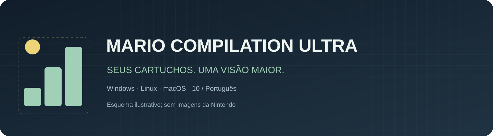
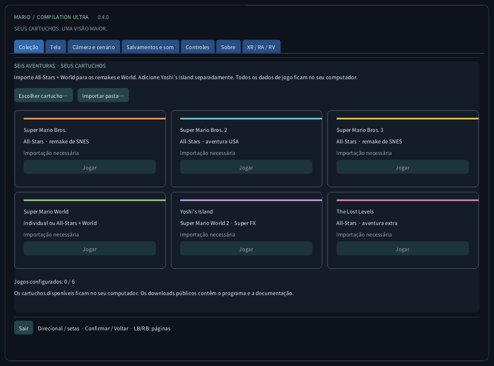
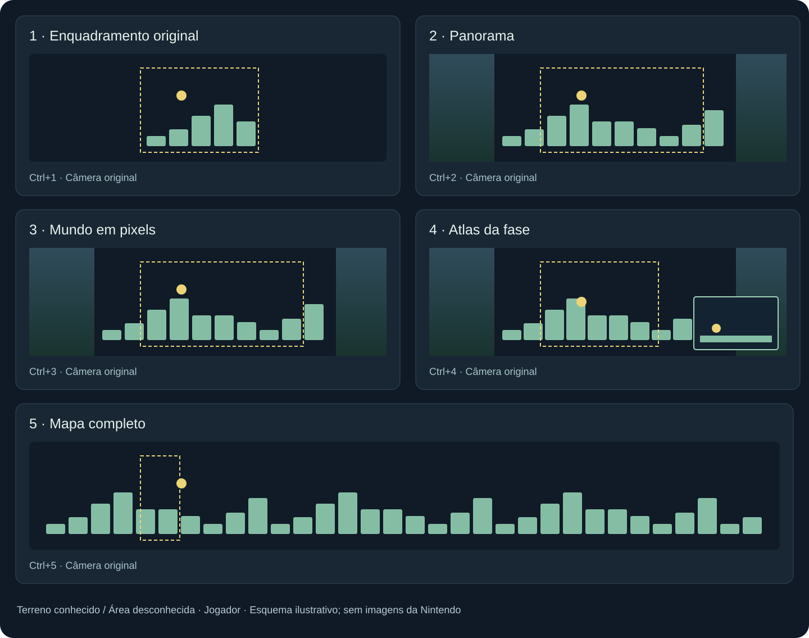
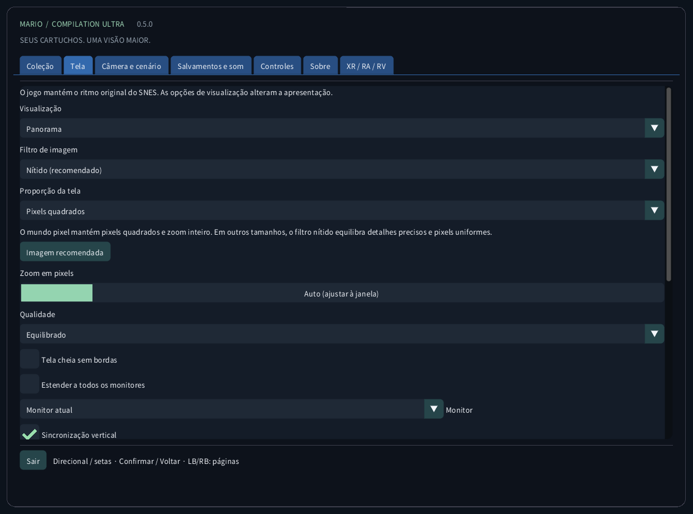
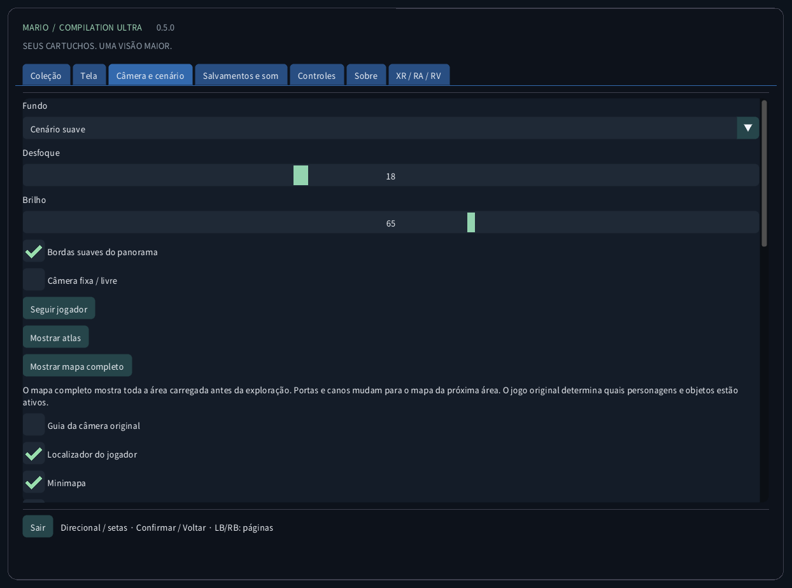
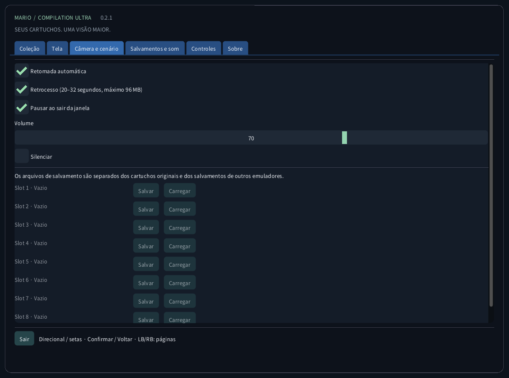
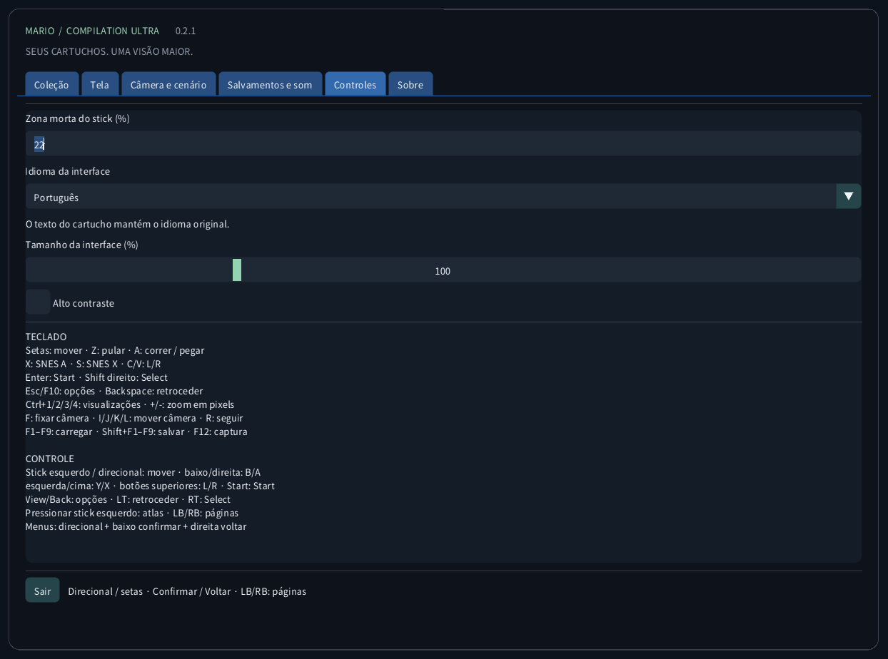
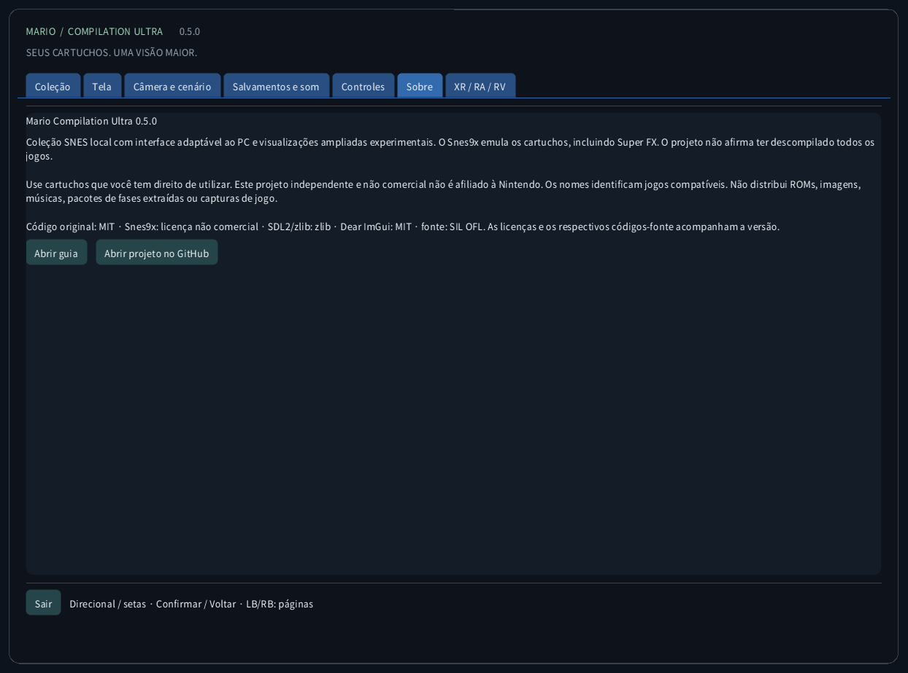

Mario Compilation Ultra 0.3.0
Coleção SNES local com interface adaptável ao PC e visualizações ampliadas experimentais. O Snes9x emula os cartuchos, incluindo Super FX. O projeto não afirma ter descompilado todos os jogos.
Download e início pela área de trabalhoDownload e início pela área de trabalho
- Baixe o pacote para seu computador e extraia todo o ZIP. Mantenha o executável, SDL, recursos e guias juntos. Windows: abra MarioCompilationUltra.exe. Linux: execute Play.sh. Mac: abra o aplicativo.
- Importe seus arquivos .sfc, .smc ou ZIP com um único cartucho usando Escolher cartucho, Importar pasta ou arrastar e soltar. O seletor abre a pasta de dados do aplicativo. Cartuchos compatíveis colocados diretamente nela são detectados na próxima execução.
- All-Stars + Super Mario World inclui Mario Bros. 1, Mario Bros. 2 USA, Mario Bros. 3, World e The Lost Levels. Adicione Yoshi’s Island separadamente. Escolha Jogar e pressione Enter ou Start na tela original; pressione novamente se houver uma demonstração.
Windows: execute Install-Windows.ps1 para copiar o pacote completo para Programs do usuário e criar o atalho. Linux: execute Install-Linux.sh para registrar esta pasta no menu e na área de trabalho. Mac: mova o app para Aplicativos e crie um alias. Mantenha a pasta portátil escolhida.
Windows: powershell -NoProfile -ExecutionPolicy Bypass -File .\Install-Windows.ps1 Linux: sh ./Install-Linux.sh

Pacotes e validação
- Windows x64: inicialização local e execução de cartuchos verificadas; também há testes automáticos.
- Linux x64: compilação e verificações sem ROM automatizadas. Jogo em computador Linux físico não testado.
- macOS Intel x64 e Apple Silicon arm64: EXPERIMENTAL, NÃO TESTADO EM MAC FÍSICO. Os testes automáticos cobrem compilação e interface sem ROM. Assinatura ad hoc, sem notarização; controle, som, gráficos e Gatekeeper não verificados em hardware real.
Modos de visualização

Imagem recomendada: Panorama, zoom Auto, filtro Nítido, pixels quadrados, bordas suaves e fundo ambiente atenuado. Tela → Imagem recomendada não altera idioma, som ou partidas salvas. Também há Pixels exatos, Suave e TV 4:3. O mundo pixel mantém zoom inteiro e pixels quadrados. As linhas seguem as linhas do jogo e são desativadas abaixo de 2× para evitar moiré.
Mapa completo (Ctrl+5) mostra todo o terreno da área carregada desde o primeiro quadro jogável nos seis jogos, sem exploração prévia. Portas e canos trocam o mapa; salas separadas não são unidas. Mario World inclui os dois planos de terreno existentes. Uma seta indica o jogador e uma vista próxima aparece quando há espaço. As quatro vistas anteriores continuam disponíveis e, fora de World, acumulam terreno observado. Personagens, plataformas móveis e efeitos mantêm a simulação e o alcance de ativação originais. Arenas especiais sem mapa de terreno usam a vista nativa. Clique no stick esquerdo: Atlas → Mapa completo → Panorama.
Os perfis de memória e a seleção automática All-Stars usam as edições dos EUA listadas. Uma edição reconhecida sem perfil verificado usa o enquadramento original. A tradução da interface não traduz a história nem os gráficos do cartucho comercial. Não se afirma uma nova descompilação nativa dos cinco jogos.
| CRC32 | SNES |
|---|---|
f84305b1 | All-Stars + World (US) |
925637c7 | All-Stars (US) |
b19ed489 | Super Mario World (US) |
d138f224 | Yoshi’s Island 1.0 (US) |
cf98ddaa | Yoshi’s Island 1.1 (US) |
Controles
TECLADO Setas: mover · Z: pular · A: correr / pegar X: SNES A · S: SNES X · C/V: L/R Enter: Start · Shift direito: Select Esc/F10: opções · Backspace: retroceder Ctrl+1/2/3/4/5: visualizações · +/-: zoom em pixels F: fixar câmera · I/J/K/L: mover câmera · R: seguir F1–F9: carregar · Shift+F1–F9: salvar · F12: captura CONTROLE Stick esquerdo / direcional: mover · baixo/direita: B/A esquerda/cima: Y/X · botões superiores: L/R · Start: Start View/Back: opções · LT: retroceder · RT: Select Clique no stick esquerdo: atlas / mapa completo / panorama · LB/RB: seções Menus: direcional + baixo confirmar + direita voltar
Salvamentos e som
Cada jogo tem nove espaços, retomada automática, SRAM e retrocesso limitado. Usa até 96 MiB para cerca de 20–32 segundos. F1–F9 carregam; Shift+F1–F9 salvam. CRC, versão do núcleo e integridade são verificados. Os saves de outros emuladores ficam separados.
Arquivos locais
Esta pasta contém settings.ini, referências aos cartuchos, states/, saves/ e screenshots/. A importação não envia o cartucho nem modifica o original. Faça backup antes de trocar de computador. Os estados dependem do cartucho e núcleo exatos; SRAM é um arquivo separado.
Windows: %APPDATA%/ValentinWittwe/MarioCompilationUltra/ Linux: ~/.local/share/ValentinWittwe/MarioCompilationUltra/ macOS: ~/Library/Application Support/ValentinWittwe/MarioCompilationUltra/
--data-dir substitui o caminho padrão. A atualização do atalho Windows preserva essa opção. Arquivos locais mostra a pasta utilizada.
Se o jogo ainda pede importação
Escolha o cartucho novamente se o arquivo foi movido ou a unidade desconectada. O ZIP deve conter um único .sfc ou .smc, sem criptografia, armazenado ou DEFLATE. Confira as edições e cabeçalhos compatíveis. Se faltar fonte ou SDL, extraia o pacote completo novamente.
Galeria da interface real
As capturas são do aplicativo real sem cartucho carregado. Os diagramas usam geometria ilustrativa original, não arte dos jogos. Os downloads públicos não incluem ROMs Nintendo, sprites, música, fases extraídas ou capturas de partidas.





Pacotes e validação · 0.3.0
As verificações públicas cobrem 156 testes em quatro suítes, 179 mensagens por idioma, fontes e 240 capturas reais. Os testes privados abrangem seis jogos, mapas imediatos, geometria horizontal e vertical, 105 áreas clássicas, 115 áreas Mario 2, 210 salas Mario 3, 1.024 entradas World em duas edições e 222 entradas Yoshi. São testes limitados de carregamento, geometria, pixels e funções, não campanhas completas. Botões físicos, áudio audível e jogo em Linux/Mac físicos seguem sem verificação. Veja o relatório.
CTest / CI · Report · Build